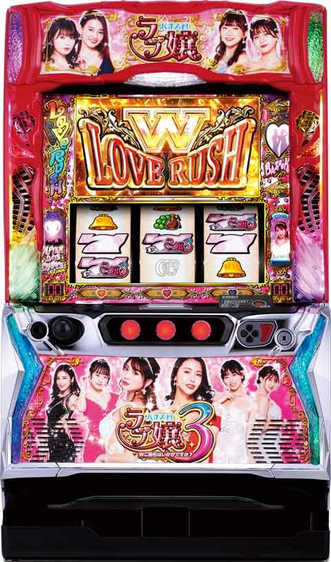
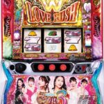

Lラブ嬢3


狙い目[ボーナス間天井狙い]
不問 320Gから
打ち出しのキャバポイントで調整。7000pあれば20-30Gボーダー下げれる。
[キャバポイント狙い]
8500pから
[ゾーン狙い]
75Gから天国前兆終了まで
(天国当選は恐らく10%くらい？)
上位CZ(Wご指名チャンス)失敗後狙い
0Gから
※データ機上で上位CZ確認出来るか不明
[ボトルキープ狙い]
AT終了後100G以内のAT当選はボトル本数引継ぐ。7本以上なら天国確認まで
[リセット狙い]
0Gから天国確認まで機械割104%くらい
天国抜けたら一旦やめ。90G前後演出ざわつき無くなったらやめ。
150GからはAT当選まで
やめ時
基本即やめ
ボトルキープの数が7本以上なら天国確認まで
・AT終了後ステージ毎のやめ時
金背景→前兆示唆 前兆確認やめ
ホワイトクリスマス→状態示唆 G数当選からなら天国またはCZ当選まで？
レインボーブリッジ、南国モード、パトステー時→AT濃厚 ステージ落ちるまで打った方が良さそう
その他
リセット時のモード
{kind=link}
ゾーン狙い期待値 たられば
{kind=link}
参考元
基本情報
- メーカー: アムテックス
- 機械割: 97.5% 〜 112.1%
- 導入開始日: 2023年12月04日（月）
- ゲーム性概要: 初代『パチスロラブ嬢』のゲーム性を継承して『Lラブ嬢3〜Wご指名はいかがですか？〜』が登場。 通常時は液晶図柄が揃えばAT確定となり、揃った図柄によってAT開始時の展開が変化する。 AT「LOVE RUSH」は差枚数管理型で、消化中のレア役では高確移行・枚数上乗せ・アフターデートチャンス・おねだりチャンス（VIP BONUSストック高確率）・バズーカ（上乗せ期待度大幅アップ状態）を抽選。AT開始時や消化中に白7がダブルで揃えば、30G＋αの上位AT「W LOVE RUSH」へ突入する。上位AT中はレア役成立でデート発展濃厚となるほか、上乗せ当選時の報酬がすべて2倍になるため超強力だ。


打ち方
打ち方・小役
打ち方（小役狙い）
［最初に狙う絵柄］ 基本的にフリー打ちでも取りこぼしはないが、正確にレア役を見抜くため左リールハート狙いを推奨だ。

［レア役の停止形］

変則押しはNG
通常時やAT中のナビ非発生は左1stでの消化を推奨。

解析情報通常時
小役関連
小役確率
| 役 | 確率 |
|---|---|
| リプレイ | 1/7.3 |
| 押し順ベル | 1/1.9 |
| 強ベル | 1/399.6 |
| ブドウA | 1/75.7 |
| ブドウB | 1/75.7 |
| チャンス目A | 1/337.8 |
| チャンス目B | 1/273.1 |
| チャンス目C | 1/337.8 |
| チャンス目D | 1/337.8 |
| 強ブドウ | 1/16384.0 |
| ハート揃い | 1/16384.0 |
各役の合算確率
| 役 | 確率 |
|---|---|
| ブドウA&B | 1/37.8 |
| チャンス目A～D | 1/79.7 |
| 確定役（強ブドウ＆ハート揃い） | 1/8192.0 |
| 全レア役 | 1/24.0 |
ブドウとチャンス目は複数種類あるが、役割はほぼ同じなので気にする必要はない。
リールロック発生率
| リールロック | ブドウ | チャンス目 | 強ベル | 確定役 |
|---|---|---|---|---|
| ナシ | 98.0% | 86.3% | 100% | 57.0% |
| 1段階 | 2.0% | 9.8% | － | 23.4% |
| 2段階 | － | 3.9% | － | 15.6% |
| 3段階 | － | － | － | 3.9% |
リールロック発生時は強ベルを否定。2段階はチャンス目 or 確定役、3段階到達でロングフリーズが発生する。
内部状態関連
内部状態概要
ラブゾーン（CZ）やAT終了後、通常時の小役契機で変化するCZ＆AT当選率に関わる状態。基本的に1段階ずつ昇格する。
内部状態の特徴
| 内部状態 | 特徴 |
|---|---|
| 低確 | CZ・AT当選率が最も低い状態 |
| 通常 | 低確よりもCZ・AT当選率が高い |
| 高確 | 強ベル・チャンス目を引けば約25%でCZに当選 |
| 超高確A | 強ベル・チャンス目・ブドウでCZ以上確定 |
| 超高確B | 強ベル・チャンス目・ブドウでAT確定 |
内部状態移行率
有利区間移行時（設定変更後など）は必ず通常以上からスタート。ラブゾーン（CZ）終了後は超高確A以下だった場合のみ再抽選される。 通常時は全役で状態アップを抽選する（メインはブドウ）。
［有利区間移行時］内部状態振り分け
| 設定 | 低確 | 通常 | 高確 | 超高確A | 超高確B |
|---|---|---|---|---|---|
| 1 | － | 78.5% | 19.5% | 1.6% | 0.4% |
| 2 | － | 74.2% | 23.4% | 2.0% | 0.4% |
| 3 | － | 69.9% | 27.3% | 2.3% | 0.4% |
| 4 | － | 65.6% | 31.3% | 2.7% | 0.4% |
| 5 | － | 61.3% | 35.2% | 3.1% | 0.4% |
| 6 | － | 57.0% | 39.1% | 3.5% | 0.4% |
［ラブゾーン終了時］内部状態振り分け
| 設定 | 低確 | 通常 | 高確 | 超高確A | 超高確B |
|---|---|---|---|---|---|
| 1 | 67.2% | 9.4% | 19.9% | 3.1% | 0.4% |
| 2 | 66.8% | 9.8% | 19.9% | 3.1% | 0.4% |
| 3 | 66.4% | 10.2% | 19.9% | 3.1% | 0.4% |
| 4 | 66.0% | 10.5% | 19.9% | 3.1% | 0.4% |
| 5 | 65.6% | 10.9% | 19.9% | 3.1% | 0.4% |
| 6 | 65.2% | 11.3% | 19.9% | 3.1% | 0.4% |
成立役ごとの内部状態移行率
| 役 | 低確→通常 | 通常→高確 | 高確 →超高確A | 超高確A →超高確B |
|---|---|---|---|---|
| リプレイ | 薄いが昇格を抽選 | |||
| 共通ベル | 薄いが昇格を抽選 | |||
| 強ベル | 39.1% | 39.1% | 39.1% | 39.1% |
| チャンス目 | 10.2% | 10.2% | 10.2% | 0.8% |
| ブドウ | 30.1% | 25.0% | 20.3% | 0.8% |
| 押し順ベル | 0.8% | 0.8% | 0.4% | － |
基本的に内部状態は1段階ずつ昇格する。
モード
ブドウのモードアップ抽選
通常時はブドウを引くごとにモードアップを抽選。モードはCZまで転落しない。
有利区間移行時・モード振り分け
有利区間移行時（設定変更時含む）は通常C以上確定。
ダブルモード
AT当選時に揃う図柄の種類を決定するモード。低確・通常・高確・超高確の4種類が存在し、100G消化ごとや共通ベル・強ベルで昇格を、押し順ベルで転落を抽選する。 超高確まで到達すれば転落の可能性はなく、次の当たりがWラブラッシュになる 。
［低確中］ダブルモード移行率
| 契機 | 低確 | 通常 | 高確 | 超高確 |
|---|---|---|---|---|
| 100G消化 | 86.7% | 12.5% | 0.4% | 0.4% |
| 共通ベル | 98.8% | 0.4% | 0.4% | 0.4% |
| 強ベル | 96.1% | 0.4% | 0.4% | 3.1% |
| 押し順ベル | 100% | － | － | － |
［通常中］ダブルモード移行率
| 契機 | 低確 | 通常 | 高確 | 超高確 |
|---|---|---|---|---|
| 100G消化 | － | 87.1% | 12.5% | 0.4% |
| 共通ベル | － | 99.2% | 0.4% | 0.4% |
| 強ベル | － | 96.5% | 0.4% | 3.1% |
| 押し順ベル | 99.6% | 0.4% | － | － |
［高確中］ダブルモード移行率
| 契機 | 低確 | 通常 | 高確 | 超高確 |
|---|---|---|---|---|
| 100G消化 | － | － | 87.5% | 12.5% |
| 共通ベル | － | － | 99.6% | 0.4% |
| 強ベル | － | － | 96.9% | 3.1% |
| 押し順ベル | － | 99.6% | 0.4% | － |
［超高確中］ダブルモード移行率
| 契機 | 低確 | 通常 | 高確 | 超高確 |
|---|---|---|---|---|
| 100G消化 | － | － | － | 100% |
| 共通ベル | － | － | － | 100% |
| 強ベル | － | － | － | 100% |
| 押し順ベル | － | － | － | 100% |
前兆
［前兆以外→前兆開始］前兆ゲーム数振り分け
| 前兆 | CZ フェイク | AT フェイク | CZ 本前兆 | AT 本前兆 | キャバクラ チャンス |
|---|---|---|---|---|---|
| 2G | － | － | － | 0.4% | － |
| 3G | － | － | － | 0.4% | 75.0% |
| 4G | － | － | － | 19.5% | 25.0% |
| 5G | － | － | － | 55.5% | － |
| 6G | － | － | － | 0.4% | － |
| 7G | － | － | 0.4% | 0.4% | － |
| 8G | － | － | 0.4% | 0.4% | － |
| 9G | － | － | 0.4% | 0.8% | － |
| 10G | － | － | 7.8% | 1.6% | － |
| 11G | － | － | 22.3% | 2.7% | － |
| 12G | － | － | 7.4% | 3.1% | － |
| 13G | － | － | 2.3% | 3.1% | － |
| 14G | － | － | 2.3% | 3.1% | － |
| 15G | － | － | 13.3% | 3.1% | － |
| 16G | － | － | 27.0% | 0.8% | － |
| 17G | 100% | 100% | 9.0% | 3.1% | － |
| 18G | － | － | 0.4% | 0.4% | － |
| 19G | － | － | 0.4% | 0.4% | － |
| 20G | － | － | 6.6% | 0.4% | － |
| 21G | － | － | － | 0.4% | － |
［前兆→異なる前兆開始］前兆ゲーム数振り分け
| 前兆 | CZ フェイク | AT フェイク | CZ 本前兆 | AT 本前兆 |
|---|---|---|---|---|
| 5G | 50.0% | 50.0% | 25.0% | 25.0% |
| 6G | 50.0% | 25.0% | 50.0% | 25.0% |
| 7G | － | 25.0% | 25.0% | 50.0% |
前兆中に異なる前兆に当選した場合は、前兆ゲーム数が短縮される。
CZ（ラブゾーン）
ラブゾーン概要
AT突入をかけたチャンスゾーン。今回もステージによって期待度が変化する。

ラブゾーン（CZ）性能
| 項目 | 示唆 |
|---|---|
| 当選契機 | レア役など |
| 継続ゲーム数 | 7G |
| 消化中の抽選 | AT（図柄揃い）を抽選 |
ステージ振り分け（内部的なレベルに応じて決定）
| 設定 | お店前 | CL | CLA | コスプレ デー | Wご指名 チャンス |
|---|---|---|---|---|---|
| 1 | 62.5% | 25.0% | 10.9% | 1.2% | 0.4% |
| 2 | 62.1% | 25.4% | 10.9% | 1.2% | 0.4% |
| 3 | 61.7% | 25.8% | 10.9% | 1.2% | 0.4% |
| 4 | 61.3% | 26.2% | 10.9% | 1.2% | 0.4% |
| 5 | 60.9% | 26.6% | 10.9% | 1.2% | 0.4% |
| 6 | 60.5% | 27.0% | 10.9% | 1.2% | 0.4% |
※CL…クラブリュクス、CLA…クラブリュクスオールキャスト
ステージ別の期待度
| ステージ | 期待度 |
|---|---|
| お店前 | 22.5% |
| クラブリュクス | 37.3% |
| クラブリュクスオールキャスト | 68.2% |
| コスプレデー | 100% |
| Wご指名チャンス | 100% （成功でWラブラッシュ） |
［クラブリュクス］

［クラブリュクスオールキャスト］

レベル（ステージ）振り分け
| 設定 | レベル1（お店前） | レベル2（CL） | レベル3（CLA） | |
|---|---|---|---|---|
| 1 | 62.5% | 25.0% | 10.9% | |
| 2 | 62.1% | 25.4% | 10.9% | |
| 3 | 61.7% | 25.8% | 10.9% | |
| 4 | 61.3% | 26.2% | 10.9% | |
| 5 | 60.9% | 26.6% | 10.9% | |
| 6 | 60.5% | 27.0% | 10.9% | |
| 設定 | レベル4（コスプレデー） | Wご指名チャンス | ||
| 1 | 1.2% | 0.4% | ||
| 2 | 1.2% | 0.4% | ||
| 3 | 1.2% | 0.4% | ||
| 4 | 1.2% | 0.4% | ||
| 5 | 1.2% | 0.4% | ||
| 6 | 1.2% | 0.4% |
※CL…クラブリュクス、CLA…クラブリュクスオールキャスト
レベル（ステージ）別のAT当選率
レベルに応じてラブゾーン突入時と消化中の成立役に応じてATを抽選。すでにATが確定している場合はレア役でATストックを抽選する。 突入時・消化中の抽選でAT非当選だった場合は、設定に応じて復活抽選がおこなわれる。
ラブゾーン当選（本前兆移行）時のAT当選率
| レベル（ステージ） | 当選率 |
|---|---|
| レベル1（お店前） | 3.1% |
| レベル2（CL） | 19.9% |
| レベル3（CLA） | 48.8% |
| レベル4（コスプレデー） | 100% |
※CL…クラブリュクス、CLA…クラブリュクスオールキャスト
レベル1［お店前］消化中のAT当選率
| 役 | 当選率 |
|---|---|
| リプレイ | 5.5% |
| 共通ベル | 5.5% |
| 強ベル | 50.0% |
| チャンス目 | 75.0% |
| ブドウ | 25.0% |
| 確定役 | 100% |
※確定役…強ブドウ、ハート揃い
レベル2［クラブリュクス］消化中のAT当選率
| 役 | 当選率 |
|---|---|
| リプレイ | 7.0% |
| 共通ベル | 7.0% |
| 強ベル | 50.0% |
| チャンス目 | 75.0% |
| ブドウ | 25.0% |
| 確定役 | 100% |
※確定役…強ブドウ、ハート揃い
レベル3［CLA］消化中のAT当選率
| 役 | 当選率 |
|---|---|
| リプレイ | 25.0% |
| 共通ベル | 25.0% |
| 強ベル | 50.0% |
| チャンス目 | 75.0% |
| ブドウ | 25.0% |
| 確定役 | 100% |
※CLA…クラブリュクスオールキャスト、確定役…強ブドウ、ハート揃い
AT当選後のATセットストック当選率
| 役 | 当選率 |
|---|---|
| 強ベル | 5.1% |
| チャンス目 | 5.1% |
| ブドウ | 0.4% |
| 確定役 | 100% |
※確定役…強ブドウ、ハート揃い
キャバクラチャンス
キャバクラチャンス概要
キャバポイント10000ptで突入する期待度50%の特殊なチャンスゾーン。3000・5000・7000ptで突入することもある。

キャバクラチャンス成功期待度（1G間の成立役）
| 役 | 期待度 |
|---|---|
| その他 | 50.0% |
| リプレイ | 50.0% |
| 共通ベル | 50.0% |
| 強ベル | 100% |
| チャンス目 | 100% |
| ブドウ | 100% |
| 確定役 | 100% |
※確定役…強ブドウ、ハート揃い
キャバポイント振り分け
小役入賞時はキャバポイント獲得確定。ハズレ（ベルこぼし等のハズレ目含む）の連続時もポイントの獲得を抽選する。
成立役別・キャバポイント振り分け
| ポイント | リプレイ | 共通ベル | 強ベル |
|---|---|---|---|
| ＋10pt | 99.6% | 99.6% | － |
| ＋20pt | 0.4% | 0.4% | － |
| ＋30pt | － | － | 87.5% |
| ＋50pt | － | － | 6.3% |
| ＋100pt | － | － | 3.1% |
| ＋200pt | － | － | 1.6% |
| ＋300pt | － | － | 0.8% |
| ＋500pt | － | － | 0.4% |
| ＋1000pt | － | － | 0.4% |
| ポイント | チャンス目 | ブドウ | 確定役 |
| ＋10pt | － | － | － |
| ＋20pt | － | 98.4% | － |
| ＋30pt | 87.5% | － | 87.5% |
| ＋50pt | 6.3% | － | 6.3% |
| ＋100pt | 3.1% | 0.4% | 3.1% |
| ＋200pt | 1.6% | 0.4% | 1.6% |
| ＋300pt | 0.8% | 0.4% | 0.8% |
| ＋500pt | 0.4% | 0.4% | 0.4% |
| ＋1000pt | 0.4% | － | 0.4% |
ハズレ連続回数別・キャバポイント振り分け
| ポイント | 5連以下 | 6～10連 | 11～15連 | 16～20連 | 21連以上 |
|---|---|---|---|---|---|
| 0pt | 99.6% | 50.0% | － | － | － |
| ＋10pt | 0.4% | 49.6% | 88.7% | － | － |
| ＋20pt | － | 0.4% | 6.3% | 88.7% | － |
| ＋30pt | － | － | 3.1% | 6.3% | 88.7% |
| ＋50pt | － | － | 1.6% | 3.1% | 6.3% |
| ＋100pt | － | － | 0.4% | 1.6% | 3.1% |
| ＋200pt | － | － | － | 0.4% | 1.6% |
| ＋300pt | － | － | － | － | 0.4% |
| ＋500pt | － | － | － | － | － |
| ＋1000pt | － | － | － | － | － |
Wご指名チャンス
Wご指名チャンス概要
ラブゾーン当選時の一部、全キャストクリア時のAT終了後などに突入する5G間の大チャンスゾーンで、成功すればWラブラッシュをストック。複数ストックにも期待できる。


Wご指名チャンス性能
| 項目 | 示唆 |
|---|---|
| 当選契機 | CZ当選時の一部、 AT中の全キャストクリア後など |
| 確率（設定1） | 1/6587.6 |
| 成功期待度 | 62.3% |
| 継続ゲーム数 | 5G |
| 消化中の抽選 | Wラブラッシュ抽選 |
成功時の告知パターン振り分け
| パターン | 振り分け |
|---|---|
| フリーズ発生 | 87.5% |
| 逆転1 | 6.3% |
| 逆転2 | 6.3% |
図柄揃い
揃った図柄ごとの恩恵
| 揃った図柄 | 恩恵 |
|---|---|
| 偶数図柄 | AT |
| 奇数（7以外）図柄 | AT＋高確スタート |
| 7図柄 | オープニングアタック10G＋AT＋高確スタート |
| H図柄 | ハーレムボーナス＋ATバズーカ |
通常時に揃った図柄によってAT開始時のオープニングアタック（初期ゲーム数決定）のゲーム数やATが高確スタートになるかどうかが決定する。
揃った図柄に注目！

AT当選時の図柄振り分け
内部的に存在するダブルモードによって、AT当選時にどの図柄が揃うかを決定する。
ダブルモード別・揃う図柄振り分け
| 図柄 | 低確 | 超高確 |
|---|---|---|
| 偶数 | 70.3% | － |
| 奇数 | 22.3% | － |
| 7 | 0.8% | － |
| W | 6.6% | 100% |
CZ・AT当選率
CZ＆AT当選率
内部状態と成立役を参照してラブゾーン（CZ）やAT直撃が抽選される。
［低確滞在時］CZ・AT当選率
| 役 | CZ フェイク前兆 | AT フェイク前兆 | CZ本前兆 | AT本前兆 |
|---|---|---|---|---|
| リプレイ | 薄いが抽選あり | |||
| 共通ベル | 0.4% | 0.4% | 0.4% | 0.4% |
| 強ベル | 96.9% | 1.2% | 1.6% | 0.4% |
| チャンス目 | 96.9% | 1.2% | 1.6% | 0.4% |
| ブドウ | 6.3% | 0.4% | 0.8% | 0.4% |
| 確定役 | － | － | － | 100% |
※確定役…強ブドウ・ハート揃い
［通常滞在時］CZ・AT当選率
| 役 | CZ フェイク前兆 | AT フェイク前兆 | CZ本前兆 | AT本前兆 |
|---|---|---|---|---|
| リプレイ | 薄いが抽選あり | |||
| 共通ベル | 0.4% | 0.4% | 0.4% | 0.4% |
| 強ベル | 94.1% | 1.2% | 3.1% | 1.6% |
| チャンス目 | 94.1% | 1.2% | 3.1% | 1.6% |
| ブドウ | 12.5% | 0.4% | 0.8% | 0.4% |
| 確定役 | － | － | － | 100% |
※確定役…強ブドウ・ハート揃い
［高確滞在時］CZ・AT当選率
| 役 | CZ フェイク前兆 | AT フェイク前兆 | CZ本前兆 | AT本前兆 |
|---|---|---|---|---|
| リプレイ | 薄いが抽選あり | |||
| 共通ベル | 0.8% | 0.8% | 0.4% | 0.4% |
| 強ベル | 69.9% | 1.2% | 25.0% | 3.9% |
| チャンス目 | 69.9% | 1.2% | 25.0% | 3.9% |
| ブドウ | 25.0% | 0.4% | 3.1% | 0.4% |
| 確定役 | － | － | － | 100% |
※確定役…強ブドウ・ハート揃い
［超高確A滞在時］CZ・AT当選率
| 役 | CZ フェイク前兆 | AT フェイク前兆 | CZ本前兆 | AT本前兆 |
|---|---|---|---|---|
| リプレイ | 薄いが抽選あり | |||
| 共通ベル | 6.3% | 0.8% | 6.3% | 0.4% |
| 強ベル | － | － | 90.2% | 9.8% |
| チャンス目 | － | － | 90.2% | 9.8% |
| ブドウ | － | － | 98.8% | 1.2% |
| 確定役 | － | － | － | 100% |
※確定役…強ブドウ・ハート揃い
［超高確B滞在時］CZ・AT当選率
| 役 | CZ フェイク前兆 | AT フェイク前兆 | CZ本前兆 | AT本前兆 |
|---|---|---|---|---|
| リプレイ | － | － | － | 5.1% |
| 共通ベル | － | － | － | 5.1% |
| 強ベル | － | － | － | 100% |
| チャンス目 | － | － | － | 100% |
| ブドウ | － | － | － | 100% |
| 確定役 | － | － | － | 100% |
※確定役…強ブドウ・ハート揃い
演出動画
ロングフリーズ
リールロック3段階目到達でフリーズが発生。ハーレムボーナスへ直行する。
フリーズ
ロングフリーズ
リールロック3段階到達でロングフリーズが発生。確定役成立時のみ、ロングフリーズの可能性がある。

確定役成立時・リールロック発生率
| リールロック | 振り分け |
|---|---|
| ナシ | 57.0% |
| 1段階 | 23.4% |
| 2段階 | 15.6% |
| 3段階 | 3.9% |
確定役成立時の3.9%でフリーズするので、実質確率は約1/210000。
解析情報ボーナス時
オープニングアタック
オープニングアタック概要
ATの初期差枚数決定ゾーンで、毎ゲームの成立役に応じて差枚数を上乗せ。レア役時は3桁枚数上乗せが確定する。 終了後は白7シングル揃いからラブラッシュ、ダブル揃いからはWラブラッシュへ移行する。

［レア役時は3桁枚数上乗せ］

［終了後は白7揃いからATへ］

継続ゲーム数抽選（＋バズーカ当選率）
まずは通常時に揃った絵柄を参照してバズーカを抽選。バズーカに当選しなかった場合は再度絵柄を参照して継続ゲーム数（5Gor10G）を抽選する。さらに オープニングアタック開始ゲーム（1G目）でレア役を引くと、10Gやバズーカへの昇格が抽選 される。
継続ゲーム数比率（各抽選を加味した平均値）
| 継続ゲーム数 | 比率 |
|---|---|
| 5G | 94.4% |
| 10G | 5.0% |
| バズーカ（10G） | 0.6% |
オープニングアタック移行時のバズーカ当選率
| 通常時の絵柄揃い | 当選率 |
|---|---|
| 偶数揃い | 0.4% |
| 奇数揃い（7以外） | 0.4% |
| 7揃い | 25.0% |
継続ゲーム数振り分け （移行時のバズーカ非当選時に抽選）
| 通常時の絵柄揃い | 5G | 10G |
|---|---|---|
| 偶数揃い | 99.6% | 0.4% |
| 奇数揃い（7以外） | 99.6% | 0.4% |
| 7揃い | － | 100% |
開始画面（1G目）の継続ゲーム数昇格当選率
| 役 | 10Gへ | バズーカへ |
|---|---|---|
| 強ベル | 99.2% | 0.8% |
| チャンス目 | 99.2% | 0.8% |
| ブドウ | 99.6% | 0.4% |
| 確定役 | － | 100% |
※確定役…強ブドウ・ハート揃い
［非バズーカ時］上乗せ枚数振り分け
| 上乗せ | その他 | 強ベル・ チャンス目 | ブドウ | 確定役 |
|---|---|---|---|---|
| ＋20枚 | 93.4％ | － | － | － |
| ＋30枚 | 4.3% | － | － | － |
| ＋50枚 | 2.3% | － | － | － |
| ＋100枚 | － | － | 98.8% | － |
| ＋150枚 | － | 98.8% | 0.8% | － |
| ＋200枚 | － | 0.8% | 0.4% | 68.0% |
| ＋300枚 | － | 0.4% | － | 25.0% |
| ＋500枚 | － | － | － | 6.3% |
| ＋1000枚 | － | － | － | 0.8% |
※確定役…強ブドウ・ハート揃い
［バズーカ時］上乗せ枚数振り分け
| 上乗せ | 逆押し ブドウ | 逆押し チャンス目 | 逆押し 強ブドウ | その他の 1枚役 |
|---|---|---|---|---|
| ＋20枚 | － | － | － | 99.2% |
| ＋30枚 | － | － | － | 0.4% |
| ＋50枚 | － | － | － | 0.4% |
| ＋100枚 | 93.4% | － | － | － |
| ＋150枚 | 6.3% | 93.4% | － | － |
| ＋200枚 | 0.4% | 6.3% | 93.8% | － |
| ＋300枚 | － | 0.4% | 5.9% | － |
| ＋500枚 | － | － | 0.4% | － |
| ＋1000枚 | － | － | － | － |
バズーカ中はレア役の種類不問で上乗せが確定する。
ラブラッシュ（AT）
ラブラッシュ概要
差枚数管理型のデフォルトAT。消化中はレア役で内部状態アップやCZ、差枚数上乗せを抽選する。

ラブラッシュ（AT）性能
| 項目 | 内容 |
|---|---|
| ATタイプ | 差枚数管理型 |
| 継続ゲーム数 | オープニングアタックで決定 |
| 消化中の抽選 | 高確移行、アフターデートチャンス、 差枚数上乗せ、特化ゾーン |
高確移行率
高確は10〜30Gのゲーム数管理で、保証ゲーム終了後の押し順ベルで転落を抽選する。 AT当選時の絵柄が奇数なら高確スタート、偶数だった場合は通常スタート。ATセット継続時（キャストクリア後）は内部状態が再抽選されるが、基本的には通常スタートとなる。 AT消化中はレア役で高確移行を抽選。ブドウ契機での高確移行がメインだ。
セット開始時の内部状態振り分け（2セット目以降）
| 内部状態 | 振り分け |
|---|---|
| 通常 | 99.6% |
| 高確 | 0.4% |
AT消化中の高確移行率
| 役 | 移行率 |
|---|---|
| 強ベル | 0.4% |
| チャンス目 | 0.4% |
| ブドウ | 37.5% |
高確移行時の保証ゲーム数振り分け
| ゲーム数 | 通常のラブラッシュ | ラブラッシュ×バズーカ |
|---|---|---|
| 10G | 62.5% | － |
| 20G | 37.5% | － |
| 30G | － | 100% |
高確転落率（通常へ移行）
| 役 | 転落率 |
|---|---|
| 押し順ベル | 50.0% |
上乗せ当選率・前兆振り分け
基本的にデート＆特化ゾーンを抽選してから、差枚数上乗せを抽選。 チャンス目とブドウは特化ゾーン系当選（前兆移行）と複合することもあるが、その他のレア役は前兆非当選時にのみ抽選される（差枚数上乗せした時点で特化ゾーンはほぼない）。 ほかにも「✕？？」ナビからの特殊な上乗せパターンも存在する。
［通常滞在時］ADC＆特化ゾーン当選率
| 役 | OC | ADC | バズーカ | トータル |
|---|---|---|---|---|
| リプレイ | － | 0.4% | － | 0.4% |
| 強ベル | 50.0% | 25.0% | 0.4% | 75.4% |
| チャンス目 | 12.5% | 39.8% | － | 52.3% |
| ブドウ | 2.3% | 2.3% | － | 4.6% |
| 確定役 | － | 87.5% | 12.5% | 100% |
※OC…おねだりちゃんす、ADC…アフターデートチャンス ※確定役…強ブドウ、ハート揃い
［高確滞在時］ADC＆特化ゾーン当選率
| 役 | OC | ADC | バズーカ | トータル |
|---|---|---|---|---|
| リプレイ | － | 0.4% | － | 0.4% |
| 強ベル | － | 99.6% | 0.4% | 100% |
| チャンス目 | － | 100% | － | 100% |
| ブドウ | － | 25.0% | － | 25.0% |
| 確定役 | － | 87.5% | 12.5% | 100% |
※OC…おねだりちゃんす、ADC…アフターデートチャンス ※確定役…強ブドウ、ハート揃い
ADC＆特化ゾーン当選時の前兆振り分け
| 前兆 | おねだりちゃんす | バズーカ | ADC失敗 |
|---|---|---|---|
| 2G | 1.6% | 1.6% | － |
| 3G | 1.6% | 1.6% | 1.6% |
| 4G | 5.1% | 5.1% | 27.3% |
| 5G | 6.3% | 6.3% | 56.3% |
| 6G | 6.3% | 6.3% | 14.8% |
| 7G | 9.4% | 9.4% | － |
| 8G | 69.9% | 69.9% | － |
| 前兆 | ADC→上乗せ | ADC→GR | ADC→GRバズーカ |
| 2G | 1.6% | 1.6% | 1.6% |
| 3G | 1.6% | 1.6% | 1.6% |
| 4G | 27.3% | 25.0% | 22.7% |
| 5G | 49.6% | 39.5% | 34.4% |
| 6G | 19.9% | 32.4% | 39.8% |
| 7G | － | － | － |
| 8G | － | － | － |
※ADC…アフターデートチャンス、GR…ご褒美ラッシュ
残り枚数が少ない場合、前兆ゲーム数が1G減る（さらに足りなければ1G減算を繰り返す）ため、上記の振り分けとはズレる場合がある。
［非バズーカ時］差枚数上乗せ当選率
| 上乗せ | 強ベル | チャンス目 | ブドウ | 確定役 |
|---|---|---|---|---|
| ＋20枚 | － | － | － | － |
| ＋30枚 | － | － | － | － |
| ＋50枚 | 1.6% | 0.4% | 0.4% | － |
| ＋100枚 | 0.4% | 0.4% | 0.4% | 68.0% |
| ＋150枚 | － | 0.4% | 0.4% | 25.0% |
| ＋200枚 | － | 0.4% | 0.4% | 6.3% |
| ＋300枚 | － | － | － | 0.8% |
| ＋500枚 | － | － | － | － |
＋1000枚
※確定役…強ブドウ・ハート揃い ※チャンス目とブドウは前兆移行時にのみ抽選
［バズーカ時］差枚数上乗せ当選率
| 上乗せ | 強ベル・ チャンス目 | ブドウ | 確定役 |
|---|---|---|---|
| ＋20枚 | － | 36.7% | － |
| ＋30枚 | － | 37.5% | － |
| ＋50枚 | 36.7% | 12.5% | － |
| ＋100枚 | 37.5% | 12.5% | － |
| ＋150枚 | 12.5% | 0.8% | － |
| ＋200枚 | 12.5% | － | 68.8% |
| ＋300枚 | 0.8% | － | 25.0% |
| ＋500枚 | － | － | 6.3% |
| ＋1000枚 | － | － | － |
| 上乗せ | 逆押しブドウ | 逆押しチャンス目 | 逆押し強ブドウ |
| ＋20枚 | 36.7% | － | － |
| ＋30枚 | 37.5% | － | － |
| ＋50枚 | 12.5% | 36.7% | － |
| ＋100枚 | 12.5% | 37.5% | － |
| ＋150枚 | 0.8% | 12.5% | － |
| ＋200枚 | － | 12.5% | 68.8% |
| ＋300枚 | － | 0.8% | 25.0% |
| ＋500枚 | － | － | 6.3% |
| ＋1000枚 | － | － | － |
※確定役…強ブドウ・ハート揃い
✕ ？？表示時の上乗せ枚数振り分け
| 上乗せ | 振り分け |
|---|---|
| ＋20枚 | 99.6% |
| ＋30枚 | 0.4% |
※ベル時は0.4%で＋20枚を追加で上乗せ
開始時のダブル揃い抽選
AT開始時の白7揃い時（擬似遊技）では、白7のW揃いを抽選（W揃いでWラブラッシュ）。通常時のW絵柄揃いなどとは別の独立した抽選なので、偶数絵柄揃いであったとしてもWラブラッシュに期待できるわけだ。
AT開始時・擬似遊技の白7揃いライン振り分け
| 白7揃い | 振り分け |
|---|---|
| シングル揃い | 93.4% |
| ダブル揃い | 6.6% |
Wラブラッシュ（上位AT）
Wラブラッシュ概要
基本的なゲーム性はラブラッシュと同じだが、こちらは30G＋αのゲーム数管理型。滞在中は上乗せ対価がすべて2倍になる強力なスペシャルATだ。終了後は通常のラブラッシュへ移行する。

Wラブラッシュ継続率
| 設定 | 継続率 |
|---|---|
| 全設定共通 | 50.0% |
Wラブラッシュの上乗せ対価2倍詳細
| 項目 | 詳細 |
|---|---|
| レア役成立 | アフターデートチャンス当選 |
| アフターデートチャンス成功 | 1回の成功でキャスト2人分攻略 |
| 差枚数上乗せ | 枚数が2倍にアップ |
| 白7揃い | Wラブラッシュのゲーム数を上乗せ |
Wラブラッシュ確率
すべてが2倍だから強烈！

アフターデートチャンス当選率
| 役 | 当選率 |
|---|---|
| リプレイ | 0.4% |
| 強ベル | 100% |
| チャンス目 | 100% |
| ブドウ | 100% |
| 確定役 | 100% |
※確定役…強ブドウ・ハート揃い
差枚数上乗せ当選率
＋1000枚
※確定役…強ブドウ・ハート揃い ※チャンス目とブドウは前兆移行時にのみ抽選
白7揃い対応1枚役時のゲーム数上乗せ当選率
| 上乗せ | シングル揃いフラグ | ダブル揃いフラグ |
|---|---|---|
| 白7揃わず | 94.9% | 99.2% |
| ＋10G | 3.1% | － |
| ＋20G | 1.6% | － |
| ＋30G | 0.4% | － |
| ＋50G | － | 0.4% |
| ＋100G | － | 0.4% |
※揃う時は逆押しの狙えカットインを経由
逆押しダブル白7揃い時は上乗せゲーム数が50G：100G＝1：1になる。
狙えカットイン発生でチャンス。ダブルで揃えば＋50G以上だ。

アフターデートチャンス
アフターデートチャンス概要
告白に成功すれば差枚数上乗せorご褒美ラッシュとなる 期待度約50% のCZ。告白成功後はラブ嬢ルーレットで恩恵が告知される。 今回もデートスポットとキャストの組み合わせによって期待度が変化する。

［デートスポット］ 背景エフェクトで期待度が示唆されるので明快。ベストスポット（金エフェクト）なら成功確定だ。

［ヘルプ嬢］ 3連続で失敗した場合は4回目にヘルプ嬢が登場して成功が確定する（3回目がAT最終ゲームに抽選される引き戻しデートだった場合は除く）。

［ラブ嬢ルーレット］ ルーレットの組み合わせにも注目！

当選時の成功抽選
アフターデートチャンスは当選した時点で結果が決まっている。おはようラプソディ経由の場合、おはようラプソディ移行時に結果を抽選。ヘルプ嬢時は結果を必ず成功に書き換える。 引き戻しアフターデートチャンス（AT最終ゲームに抽選されるアフターデートチャンス）成功時はご褒美ラッシュ以上が確定する。
当選契機別・ADC当選時の結果振り分け
| 結果 | 確定役以外 | 確定役 |
|---|---|---|
| ゲーム数上乗せ | 37.5% | － |
| ご褒美ラッシュ | 12.1% | 87.5% |
| ご褒美ラッシュ＋バズーカ | 0.4% | 12.5% |
| トータル成功率 | 50.0% | 100% |
※ADC…アフターデートチャンス ※確定役…強ブドウ、ハート揃い
引き戻しADC当選時の結果振り分け
| 結果 | ヘルプ嬢なし | ヘルプ嬢あり |
|---|---|---|
| ゲーム数上乗せ | － | － |
| ご褒美ラッシュ | 49.6% | 99.6% |
| ご褒美ラッシュ＋バズーカ | 0.4% | 0.4% |
| トータル成功率 | 50.0% | 100% |
※ADC…アフターデートチャンス ※確定役…強ブドウ、ハート揃い
成功書き換え抽選
アフターデートチャンスは当選時に成否が決まっているが、前兆中やデート中のレア役で成功への書き換えを抽選。もちろん成功が決まっている場合は上位の報酬に書き換えを抽選するのでヒキ損はない。
［引き戻しADC］書き換え当選率
| 役 | 上乗せ | GR | GRバズーカ | トータル |
|---|---|---|---|---|
| 強ベル | － | 3.1% | 0.4% | 3.5% |
| チャンス目 | － | 3.1% | 0.4% | 3.5% |
| ブドウ | － | 0.4% | － | 0.4% |
| 確定役 | － | 87.5% | 12.5% | 100% |
※確定役…強ブドウ・ハート揃い ※ADC…アフターデートチャンス、GR…ご褒美ラッシュ
［ラブラッシュ中のADC］書き換え当選率 ※前兆中含む
| 役 | 上乗せ | GR | GRバズーカ | トータル |
|---|---|---|---|---|
| 強ベル | 6.3% | 0.4% | 0.4% | 7.0% |
| チャンス目 | 6.3% | 0.4% | 0.4% | 7.0% |
| ブドウ | 3.1% | 0.4% | － | 3.5% |
| 確定役 | － | 87.5% | 12.5% | 100% |
※確定役…強ブドウ・ハート揃い ※ADC…アフターデートチャンス、GR…ご褒美ラッシュ
［Wラブラッシュ中のADC］書き換え当選率 ※前兆中含む
| 役 | 上乗せ | GR | GRバズーカ | トータル |
|---|---|---|---|---|
| 強ベル | 99.2% | 0.4% | 0.4% | 100% |
| チャンス目 | 99.2% | 0.4% | 0.4% | 100% |
| ブドウ | 49.6% | 0.4% | － | 50.0% |
| 確定役 | － | 87.5% | 12.5% | 100% |
※確定役…強ブドウ・ハート揃い ※ADC…アフターデートチャンス、GR…ご褒美ラッシュ
Wラブラッシュ中は前兆〜デート中にレア役を引いた時点で成功が確定する。
［強ベル・チャンス目］成功確定中の書き換え当選率
| 状態 | 上乗せ | GR | GRバズーカ | トータル |
|---|---|---|---|---|
| 上乗せ当選中 | 99.2% | 0.4% | 0.4% | 0.8% |
| GR当選中 | － | 99.6% | 0.4% | 0.4% |
※GR…ご褒美ラッシュ ※ブドウや確定役の抽選は失敗時の書き換えと同様
上乗せ時の枚数振り分け
| 枚数 | 振り分け |
|---|---|
| ＋20枚 | － |
| ＋30枚 | － |
| ＋50枚 | 96.9% |
| ＋100枚 | 2.3% |
| ＋150枚 | 0.4% |
| ＋200枚 | 0.4% |
| ＋300枚 | － |
| ＋500枚 | － |
| ＋1000枚 | － |
※Wラブラッシュ中は上記の結果を2回分加算
おはようラプソディ
おはようラプソディ概要
アフターデートチャンス成功の一部で突入する特殊なモードで、移行後はゲーム数消化で再びアフターデートチャンスへ突入する。

おはようラプソディ当選率
| 契機 | 当選率 |
|---|---|
| アフターデートチャンス成功時 | 5.1% |
ご褒美ラッシュ
ご褒美ラッシュ概要
アフターデートチャンス成功から移行する可能性がある4Gの差枚数上乗せ特化ゾーン。カットイン発生時は3桁枚数以上の上乗せが確定する。

ご褒美ラッシュ性能
| 項目 | 詳細 |
|---|---|
| 突入ルート | アフターデートチャンス成功の一部 |
| 継続ゲーム数 | 4G＋α |
| 1Gあたりの上乗せ枚数 | 20枚～1000枚 |
状態＆枚数上乗せ抽選
当選時に低確・通常・高確という3つの状態に振り分けられ、 状態によって保証ゲーム（4Gor5Gor10G）消化後の継続率が変化 。 Wラブラッシュ中は上乗せ枚数がすべて倍になるが、通常以上の選択率は若干低い。 毎ゲームの上乗せ枚数振り分けはオープニングアタックと同じ抽選値になっている。
状態振り分け
| 状態 | ラブラッシュ中 | Wラブラッシュ中 |
|---|---|---|
| 低確 | 40.2% | 62.5% |
| 通常 | 40.2% | 27.7% |
| 高確 | 19.5% | 9.8% |
保証ゲーム数振り分け
| ゲーム数 | 振り分け |
|---|---|
| 4G | 99.2% |
| 5G | 0.4% |
| 10G | 0.4% |
保証ゲーム消化後の継続抽選当選率 （毎ゲーム抽選）
| 状態 | 当選率 |
|---|---|
| 低確 | 0.4% |
| 通常 | 54.7% |
| 高確 | 70.3% |
| バズーカ | 66.4% |
上乗せ枚数の振り分けはコチラ
おねだりちゃんす
おねだりちゃんす概要
AT中のレア役を契機に突入する特化ゾーンで、7G間、おねだりされている小役を引くごとにVIPボーナスをストック。逆押しナビ発生時はおねだり小役成立のチャンスだ。

おねだりちゃんす性能
| 項目 | 詳細 |
|---|---|
| 突入ルート | AT中のレア役時の抽選 |
| 継続ゲーム数 | 7G |
| 確率 | 1/396.3 |
| 成功期待度 | 43.6%（ストック1個以上） |
| 平均ストック数 | 1.3個 |
| 消化中の抽選 | おねだり小役成立でVIPボーナスストック |
［逆押しナビ］

おねだりちゃんす突入率
| 契機 | 突入率 |
|---|---|
| アフターデートチャンス成功 | 5.1% |
おねだりちゃんす継続抽選当選率
| 契機 | 当選率 |
|---|---|
| おねだりちゃんす終了時 | 0.4% |
おねだり小役振り分け
| おねだり小役 | 振り分け |
|---|---|
| チャンス目 | 87.5% |
| チャンス目＆ブドウ | 12.5% |
VIPボーナス
VIPボーナス概要
おねだりちゃんすでストックされる30G間のボーナスで、滞在中はレア役or黒7揃いで必ず差枚数を上乗せ。複数ストックしていた場合は1G連でVIPボーナスが放出される。

VIPボーナス性能
| 項目 | 詳細 |
|---|---|
| 突入ルート | おねだりちゃんす成功 |
| 継続ゲーム数 | 30G |
| 消化中の抽選 | 差枚数上乗せ性能がアップ |
上乗せ抽選（＋バズーカ当選率）
黒7揃いやレア役成立で上乗せが確定する。
VIPボーナスの種別振り分け （バズーカ当選率）
| 種別 | 振り分け |
|---|---|
| 通常のVIPボーナス | 99.6% |
| バズーカ | 0.4% |
黒7揃いリプレイ時の上乗せ枚数振り分け
| 結果 | 振り分け |
|---|---|
| 揃わず（上乗せなし） | 5.9% |
| ＋50枚 | 87.9% |
| ＋100枚 | 6.3% |
［非バズーカ時］差枚数上乗せ当選率
| 上乗せ | 強ベル | チャンス目 | ブドウ | 確定役 |
|---|---|---|---|---|
| ＋20枚 | － | － | 98.8% | － |
| ＋30枚 | － | － | 0.4% | － |
| ＋50枚 | 95.7% | 95.7% | 0.4% | － |
| ＋100枚 | 3.1% | 3.1% | 0.4% | 66.4% |
| ＋150枚 | 0.8% | 0.8% | － | 25.0% |
| ＋200枚 | 0.4% | 0.4% | － | 6.3% |
| ＋300枚 | － | － | － | 1.6% |
| ＋500枚 | － | － | － | 0.8% |
| ＋1000枚 | － | － | － | － |
※確定役…強ブドウ・ハート揃い
［バズーカ時］差枚数上乗せ当選率
| 上乗せ | 逆押しブドウ | 逆押しチャンス目 | 逆押し強ブドウ |
|---|---|---|---|
| ＋20枚 | 36.7% | － | － |
| ＋30枚 | 37.5% | － | － |
| ＋50枚 | 12.5% | 36.7% | － |
| ＋100枚 | 12.5% | 37.5% | － |
| ＋150枚 | 0.8% | 12.5% | － |
| ＋200枚 | － | 12.5% | 68.8% |
| ＋300枚 | － | 0.8% | 25.0% |
| ＋500枚 | － | － | 6.3% |
| ＋1000枚 | － | － | － |
狙えカットイン時に黒7が揃えば上乗せ確定！

ハーレムボーナス
ハーレムボーナス概要
AT中の全キャストクリアや通常時のH図柄揃いから突入するボーナスで、消化中のレア役は差枚数上乗せ確定だ。

バズーカ
バズーカ概要
様々なタイミングで突入するおなじみの状態で、滞在中はレア役確率が約1/4にアップする。

引き戻しチャンス
引き戻しチャンス概要
AT最終ゲームはアフターデートチャンスの抽選、ご延長成功、リラクの泉突入といった引き戻しパターンが存在。 リラクの泉に突入すれば引き戻しの大チャンスとなる。
［引き戻しアフターデートチャンス］

［ご延長あおり］

［リラクの泉］

ご延長当選率
レア役を引けば上乗せ（延長成功）が確定する。
ご延長チャンスの差枚数上乗せ当選率 （成功抽選）
| 上乗せ | その他 | 強ベル・ チャンス目 | ブドウ | 確定役 |
|---|---|---|---|---|
| ＋20枚 | － | － | － | － |
| ＋30枚 | － | － | － | － |
| ＋50枚 | 0.4% | － | 99.2% | － |
| ＋100枚 | － | 96.5% | 0.4% | － |
| ＋150枚 | － | 3.1% | 0.4% | － |
| ＋200枚 | － | 0.4% | － | 84.4% |
| ＋300枚 | － | － | － | 12.5% |
| ＋500枚 | － | － | － | 3.1% |
| ＋1000枚 | － | － | － | － |
※確定役…強ブドウ・ハート揃い
リラクの泉突入率＆ゲーム数抽選
今回もリラクの泉は高設定ほど移行しやすい。突入時のAT期待度は 60%以上 だ。
リラクの泉・突入率
| 設定 | ［フェイク］リラクの泉 | ［本前兆］リラクの泉 |
|---|---|---|
| 1 | 0.8% | 2.0% |
| 2 | 0.8% | 2.0% |
| 3 | 1.2% | 2.3% |
| 4 | 1.6% | 2.7% |
| 5 | 1.6% | 2.7% |
| 6 | 1.6% | 2.7% |
リラクの泉・継続ゲーム数振り分け
| ゲーム数 | ［フェイク］リラクの泉 | ［本前兆］リラクの泉 |
|---|---|---|
| 4G | － | 0.8% |
| 5G | － | 0.8% |
| 6G | － | 0.8% |
| 7G | － | 0.8% |
| 8G | － | 0.8% |
| 9G | － | 0.8% |
| 10G | － | 2.3% |
| 11G | － | 2.3% |
| 12G | 12.5% | 12.5% |
| 13G | 12.5% | 12.5% |
| 14G | 18.8% | 12.5% |
| 15G | 18.8% | 12.5% |
| 16G | 18.8% | 20.3% |
| 17G | 18.8% | 20.3% |
その他
裏乗せ（延長ストック）抽選
オープニングアタック開始までの準備中、オープニングアタックの開始ゲーム（1G目）、おはようラプソディではレア役で枚数上乗せを抽選。当選時は裏乗せとなり、ご延長あおりを経由して枚数が告知される!?
裏乗せ（延長ストック）当選率
| 役 | ＋50枚 | ＋100枚 | トータル |
|---|---|---|---|
| 強ベル | 0.4% | 0.4% | 0.8% |
| チャンス目 | 0.4% | 0.4% | 0.8% |
| ブドウ | 0.4% | － | 0.4% |
| 確定役 | － | 100% | 100% |
※確定役…強ブドウ・ハート揃い
逆押しレア役
おもにバズーカ中に出現する可能性のあるレア役で、ブドウ・チャンス目・強ブドウ（確定役）の3パターンが存在する。

演出情報
通常時
ステージごとの示唆
| ステージ | 示唆 |
|---|---|
| 華舞姫町 | デフォルト （背景がピンクや金になれば前兆） |
| 夜桜 | 高モード示唆 |
| ホワイトクリスマス | 高確示唆 |
| レインボーブリッジ | AT当選の期待大 |
［華舞姫町］ 背景エフェクトで前兆を示唆。

［夜桜］

［ホワイトクリスマス］

［レインボーブリッジ］

Wラブラッシュ示唆演出
通常時やCZ中にはWラブラッシュを示唆する演出パターンが存在する。
［W図柄停止］

［Wエフェクト］

［CZ中のWラブラッシュ帯］